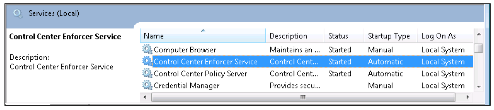

All enforcers run as Windows services and are assigned a default user
account at installation. This account must have read, execute, and create permission for
the folder where the enforcer is installed. For example, by default, the Windows Desktop
Enforcer is installed in Program Files\NextLabs\Desktop Enforcer,
and is assigned the Local System user account, as shown in the following figure.Figure: Enforcer service user account

Important: Do not change the permission levels of the install directory,
wherever it may be, or of the services user accounts, in such a way that the account
does not have read, execute and create permission for the installation folder. If
you do this, the account cannot access the service, and it does not restart
automatically if it ever stops. For example, if you change the Local System user
permission to extend only to Program Files without any child directories, the
Windows Desktop Enforcer service cannot restart.